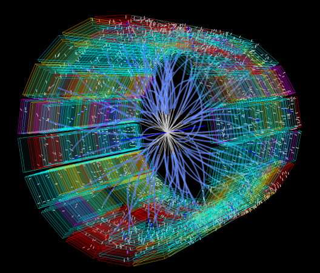

Glúons são partículas fundamentais que agem como partículas de troca para a força forte entre quarks, análoga à troca de fótons na força eletromagnética entre duas partículas carregadas. Os glúons são bósons vetoriais que medeiam as forças fortes de quarks na cromodinâmica quântica
importancia dos glúons
Os glúons, por sua vez, são os mediadores da interação forte, que mantém os quarks unidos, formando os mésons e os bárions. Os bósons W e Z são os responsáveis pela força eletrofraca, comum nos decaimentos beta.